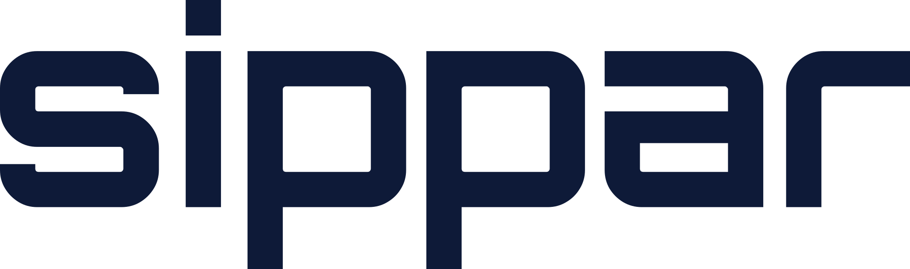

Planning the reading
Nuru research agent
Ask a question. Nuru reads paid and free sources and writes a short brief; every point opens to its quote.

PlaygroundAsk a question. Nuru reads paid and free sources and writes a short brief; every point opens to its quote.
Planning the reading